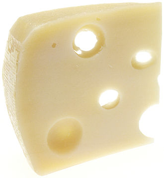

Le fromage est un aliment obtenu à partir de lait coagulé, de produits laitiers ou d'éléments du lait comme le petit-lait ou la crème. Le fromage est fabriqué à partir de lait de vache principalement, mais aussi de brebis, de chèvre, de bufflonne ainsi qu'occasionnellement de chamelle, de renne, d'élan, de jument…

La coagulation peut être obtenue soit par action d'une enzyme, la présure, soit par fermentation provoquée par des bactéries lactiques (le lactose est alors transformé en acide lactique), soit très fréquemment par combinaison des deux méthodes précédentes, soit par chauffage associé à une acidification directe (vinaigre...). On procède ensuite à l'égouttage. On obtient alors le caillé et le lactosérum1. Le lactosérum peut aussi être utilisé directement : fromage de lactosérum comme le sérac, ou par réincorporation de ses composants.